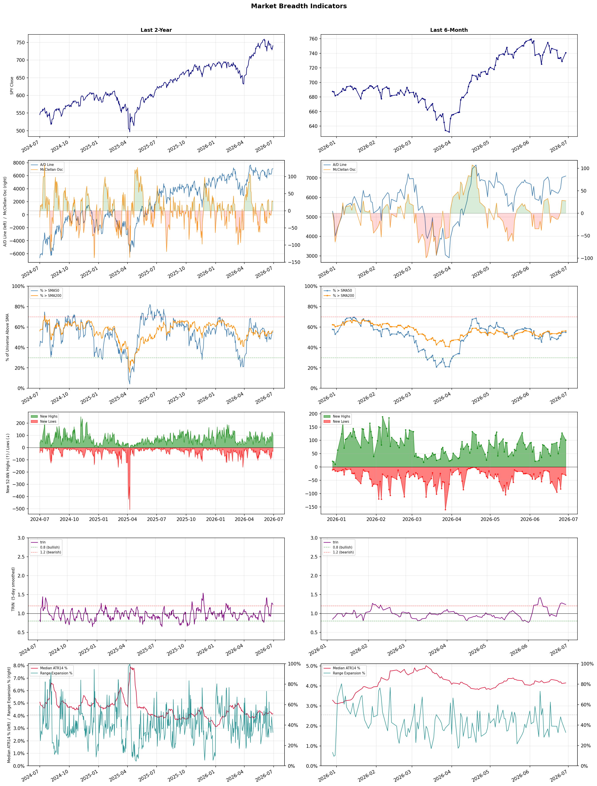

A daily market breadth and sector rotation report for active investors
| Item | Read |
|---|---|
| Regime | Selective Risk-On |
| Risk posture | Selective |
| Universe | 1,348 stocks tracked · 101 new 52-week highs · 30 active swing setups |
| Breadth | 55.0% of tracked stocks are above SMA50 — neutral range, new highs exceed new lows (101 vs 31) |
| Leadership | Healthcare Plans, Semiconductor Equipment & Materials, and Airlines |
| Weakest groups | Gold, Uranium, and Financial Data & Stock Exchanges |
Use this report to prioritize research and chart review; validate entries, stops, liquidity, earnings, and risk before acting.
| Item | Read |
|---|---|
| Primary read | Selective Risk-On regime with Selective risk posture. |
| Research queue | CLOV, OSCR, HUM, CVS, ALHC |
| Leadership focus | Healthcare Plans, Semiconductor Equipment & Materials, and Airlines |
| Caution list | Gold, Uranium, and Financial Data & Stock Exchanges |
| Review prompt | Check extension risk, chart location, fundamentals, valuation, and earnings before using any research row. |
| Item | Read |
|---|---|
| Primary read | 1 active risk warnings; use screen output as watchlist input only. |
| Bullish screens | HUM, PGNY, ADPT, GH, NEO |
| Bearish screens | none |
| Alerts / levels | Automated trigger, stop, ATR, liquidity, reward/risk, and event-risk levels are pending future enrichment. |
| Review prompt | Open the linked chart, define trigger and invalidation, then check liquidity and event risk independently. |
Risk Posture: Selective — screen backdrop supports selective research in leading industries
Metric context: McClellan below -50 = elevated selling pressure; below -100 = washout territory. Range Expansion = share of stocks with daily range above their 20-day average. Signal Density = share of tracked names appearing in signal screens.
| Breadth Date | % > SMA50 | % > SMA200 | New Highs | New Lows | McClellan | Median Range | Avg Range | Median ATR14 | Range Expansion | Signal Density |
|---|---|---|---|---|---|---|---|---|---|---|
| 2026-06-29 | 55.0% | 56.2% | 101 | 31 | 27.6 | 3.4% | 4.2% | 4.2% | 32.8% | 1.9% |

Prior comparison date: June 26, 2026
| Metric | Prior | Current | Change |
|---|---|---|---|
| Regime | Selective Risk-On | Selective Risk-On | unchanged |
| Risk Posture | Selective | Selective | unchanged |
| % > SMA50 | 54.7% | 55.0% | +0.3 pts |
| % > SMA200 | 55.8% | 56.2% | +0.3 pts |
| New Highs | 126 | 101 | -25 |
| New Lows | 26 | 31 | -5 |
Top-10 industries entering: Insurance - Property & Casualty. Top-10 industries leaving: Health Information Services. New multi-signal long setups: ABBV, ABCL, ABNB, ALL, BB, BFLY, CB, CMPS, CUZ, DOC. New multi-signal short setups: none.
| Status | Tickers | Read |
|---|---|---|
| Added | ABBV, ABCL, ABNB, ALL, BB, BFLY, CB, CMPS | New technical screen matches vs prior report. |
| Removed | AEE, ALKS, APLE, ASB, CALY, DRH, EBC, EXEL | No longer present in today's technical screen matches. |
| Still Active | ABSI, ADPT, CADL, EVC, FTNT, GH, GNW, HUM | Appeared in both current and prior reports. |
| Promoted | none | Model Screen Score improved by at least 15 points. |
| Downgraded | GNW | Model Screen Score declined by at least 15 points. |
| Direction | Industry | ETF | Prior Rank | Current Rank | Days | Rank Change |
|---|---|---|---|---|---|---|
| Rose | Building Products & Equipment | XHB | 91 | 10 | 35 | +81 |
| Rose | Airlines | N/A | 75 | 3 | 42 | +72 |
| Rose | Insurance - Property & Casualty | KIE | 80 | 9 | 28 | +71 |
| Rose | Furnishings, Fixtures & Appliances | N/A | 98 | 30 | 42 | +68 |
| Rose | Packaging & Containers | N/A | 89 | 24 | 42 | +65 |
Bull: The Building Products & Equipment sector is experiencing rising relative strength primarily due to a potential recovery in the housing market, as indicated by headlines surrounding Lennar and PulteGroup, which suggest that major homebuilders may be turning a corner after recent slumps. Additionally, the growing interest in construction and mining equipment stocks, despite industry headwinds, signals increased investment in infrastructure and housing, further bolstered by the ongoing discussions about mortgage rates and their impact on homebuyer sentiment. This combination of recovering demand in housing and infrastructure investment positions the sector favorably for growth.
Bear: While the recent headlines suggest a potential recovery in the housing market, the underlying fundamentals remain concerning, particularly with mortgage rates poised to spike again, which could dampen homebuyer sentiment and affordability. Additionally, the construction and mining equipment sector may be benefiting from short-term investments, but persistent supply chain issues, rising material costs, and economic uncertainty could hinder long-term growth in the Building Products & Equipment industry. Therefore, the optimism surrounding the sector may be overstated and could lead to disappointing performance as these headwinds materialize.
Verdict: The Building Products & Equipment sector is likely experiencing a rise due to a combination of improving sentiment in the housing market and increased investments in infrastructure, driven by major homebuilders like Lennar and PulteGroup showing signs of recovery. However, the key risk lies in the potential for rising mortgage rates to dampen homebuyer affordability and sentiment, which could undermine the sector's growth prospects if these headwinds materialize. Investors should closely monitor mortgage rate trends and supply chain dynamics to gauge the sustainability of this upward momentum.
Sources: Yahoo Finance, Google News
Bull: The airline industry is experiencing a bullish trend primarily due to falling fuel costs, which significantly enhance profitability for carriers, as highlighted by the recent surge in stock prices for major airlines like American Airlines and United. Additionally, positive coverage from investment research outlets, such as Zacks and Investor's Business Daily, underscores a favorable outlook for airline stocks, suggesting that investors are increasingly optimistic about the sector's recovery and growth potential as travel demand continues to rebound post-pandemic.
Bear: While falling fuel costs may provide a temporary boost to profitability, the airline industry remains vulnerable to significant headwinds, including rising labor costs, potential economic downturns, and geopolitical tensions that could disrupt travel demand. Additionally, the current bullish sentiment may overlook the cyclical nature of the industry, where overcapacity and price wars can quickly erode margins, suggesting that the recent stock price surges may not be sustainable in the long term.
Verdict: The airline industry's bullish trend is primarily driven by falling fuel costs, which enhance profitability and have led to rising stock prices for major carriers. However, investors should remain cautious of the key risks highlighted by the bear thesis, including rising labor costs and potential economic downturns that could dampen travel demand, suggesting that the current optimism may not be sustainable in the long run. It is advisable to monitor these macroeconomic factors closely and consider diversifying investments to mitigate potential volatility.
Sources: Google News
Bull: The rising relative strength of the Property & Casualty insurance sector, as reflected in the recent headlines, can be attributed to a combination of strong earnings reports and positive market sentiment towards key players like Globe Life and Aon, indicating bullish expectations from Wall Street. Additionally, the mention of the best-performing ETFs and specific highlights from Q1 earnings of companies like MGIC Investment and Employers Holdings suggest that the sector is experiencing solid financial performance, which is attracting investor interest and driving up stock prices within the industry.
Bear: While the rising relative strength of the Property & Casualty insurance sector may seem promising, it is essential to consider the underlying risks that could undermine this momentum. The recent headlines may reflect short-term positive sentiment, but they do not account for potential headwinds such as rising claims costs, increased regulatory scrutiny, and the looming threat of economic downturns, which could significantly impact profitability and investor confidence in the long term. Moreover, the performance of individual stocks like Globe Life and Aon may not be representative of the entire sector, making it crucial to remain cautious amidst potential volatility.
Verdict: The Property & Casualty insurance sector's rising relative strength is primarily driven by strong earnings reports and positive market sentiment towards key players, signaling bullish expectations from investors. However, it is crucial to remain cautious due to underlying risks such as rising claims costs and potential economic downturns, which could undermine profitability and investor confidence in the long term. Investors should consider a diversified approach to mitigate exposure to these risks while capitalizing on the sector's current momentum.
Sources: Yahoo Finance, Google News
Bull: The Furnishings, Fixtures & Appliances sector is experiencing a rise in relative strength primarily due to strong consumer demand and positive earnings reports from key players like La-Z-Boy, which saw a 13% surge after its robust Q4 earnings. Additionally, the momentum in consumer discretionary stocks, highlighted by Traeger, Inc.'s leadership, signals increased consumer spending and confidence, further bolstering the sector's growth prospects. This combination of strong earnings and positive market sentiment positions the sector favorably for continued upward momentum.
Bear: While the recent earnings report from La-Z-Boy and the momentum in consumer discretionary stocks may suggest a bullish outlook, it is essential to consider the broader economic context, including potential inflationary pressures and rising interest rates that could dampen consumer spending. Additionally, the surge in stock prices may be driven more by short-term market sentiment rather than sustainable demand, as consumers may be tightening their budgets in response to economic uncertainties, leading to a potential slowdown in the Furnishings, Fixtures & Appliances sector.
Verdict: The Furnishings, Fixtures & Appliances sector is likely experiencing upward momentum due to strong consumer demand and positive earnings from key players, indicating robust consumer confidence and spending. However, the key risk lies in potential inflationary pressures and rising interest rates, which could lead to reduced consumer spending and a slowdown in the sector's growth. Investors should closely monitor economic indicators and consumer sentiment to gauge the sustainability of this trend.
Sources: Google News
Bull: The Packaging & Containers industry is experiencing a rising relative strength trend due to its resilience in the face of macroeconomic challenges, such as the recent Iran war impacting energy costs. Despite some short-term volatility, as highlighted by the mixed signals in sector performance and the scrutiny of stocks like Verallia, the overall demand for packaging solutions remains robust, driven by ongoing consumer trends towards e-commerce and sustainability. Additionally, as noted in the Yahoo Finance article, the industry is attracting attention from investors looking for opportunities in a promising sector, which could further bolster stock performance.
Bear: While the bull thesis highlights resilience and ongoing demand, it overlooks the significant headwinds posed by rising energy costs exacerbated by geopolitical tensions, such as the Iran war, which could severely impact profit margins for packaging companies reliant on energy-intensive processes. Furthermore, the mixed signals in sector performance and the recent declines in stock prices indicate that investor sentiment may be shifting, suggesting that the industry's current strength could be more illusory than substantive, as long-term sustainability trends may not fully offset the immediate economic pressures.
Verdict: The Packaging & Containers industry is likely experiencing a rising trend due to sustained demand driven by e-commerce growth and a shift towards sustainable packaging solutions, which are appealing to investors. However, the key risk remains the impact of rising energy costs from geopolitical tensions, such as the Iran war, which could significantly squeeze profit margins and dampen overall sector performance. Investors should closely monitor energy price fluctuations and their potential effects on profitability when considering positions in this sector.
Sources: Google News
| Direction | Industry | ETF | Prior Rank | Current Rank | Days | Rank Change |
|---|---|---|---|---|---|---|
| Fell | Chemicals | N/A | 11 | 85 | 42 | -74 |
| Fell | Copper | COPX | 8 | 82 | 28 | -74 |
| Fell | Oil & Gas Integrated | XLE | 8 | 80 | 42 | -72 |
| Fell | Steel | SLX | 6 | 77 | 35 | -71 |
| Fell | Oil & Gas E&P | XOP | 17 | 84 | 42 | -67 |
Bear: While the bull analyst points to broader market volatility as a temporary issue, the consistent decline in the chemicals sector's relative strength suggests deeper, structural problems that could hinder recovery. Factors such as rising raw material costs, increasing regulatory pressures, and potential shifts in consumer demand toward more sustainable alternatives could further erode profitability and market positioning for traditional chemical companies, making any short-term optimism appear misplaced. Additionally, the sector's reliance on cyclical economic growth raises concerns about its resilience in an uncertain economic environment, particularly as inflationary pressures persist.
Bull: The Chemicals sector is experiencing a decline in relative strength primarily due to broader market volatility, as indicated by the sector-wide selling that led to Eastman Chemical's 5.7% drop. Additionally, while the sector is currently under pressure, there are signs of optimism as highlighted by Morningstar's commentary on opportunities in chemicals and agriculture, suggesting that despite short-term challenges, the long-term fundamentals remain strong, particularly for companies positioned in specialty chemicals.
Verdict: The chemicals sector's decline appears driven by broader market volatility and structural challenges, including rising raw material costs and regulatory pressures, which could undermine profitability. While there are long-term opportunities in specialty chemicals, the key risk remains the sector's dependence on cyclical economic growth, making it vulnerable to shifts in consumer demand and persistent inflationary pressures. Investors should closely monitor these factors before making significant commitments to the sector.
Sources: Google News
Bear: While the bull analyst attributes copper's declining relative strength to macroeconomic concerns and sector rotation, it's crucial to consider that the copper market is also facing significant supply challenges. With many major mines experiencing operational disruptions and geopolitical tensions affecting production in key regions, the potential for supply shortages could counterbalance any demand weakness from global manufacturing. Furthermore, the long-term transition to renewable energy and electric vehicles may sustain copper demand, but the current market sentiment reflects skepticism about these growth narratives amid economic uncertainty, suggesting that the recent rally may be overextended.
Bull: Copper's relative strength is likely falling due to concerns about global manufacturing weakening, as highlighted in the headline "If Global Manufacturing Weakens, Here’s What Happens to This Copper ETF." Additionally, the shift in investor focus towards other sectors, such as AI and energy resilience, as indicated by headlines discussing the AI trade and grid resilience ETFs, may be diverting attention and capital away from copper investments. This combination of macroeconomic uncertainty and sector rotation is contributing to copper's declining relative strength.
Verdict: Copper prices are likely falling due to a combination of weakening global manufacturing and a shift in investor focus towards sectors like AI and energy resilience, which has diverted capital away from copper investments. However, a key risk to this bearish trend is the potential for supply disruptions from major mines and geopolitical tensions, which could lead to future supply shortages that support copper prices despite current demand concerns. Investors should monitor supply chain developments closely, as any positive news in this area could trigger a rebound in copper prices.
Sources: Yahoo Finance, Google News
Bear: While the bull analyst points to fluctuating oil prices and mixed market sentiment, it's important to note that the ongoing decline in relative strength for the Oil & Gas Integrated sector signals deeper, systemic issues. Factors such as increasing regulatory pressures on fossil fuels, a global shift towards renewable energy, and potential economic slowdowns could exacerbate the volatility in oil prices, leading to sustained underperformance in the sector. Furthermore, the headlines suggesting bullish stock picks may be overly optimistic, as they do not account for the long-term risks associated with climate change policies and technological advancements in alternative energy.
Bull: The Oil & Gas Integrated sector is experiencing a decline in relative strength primarily due to a combination of fluctuating oil prices and mixed market sentiment, as indicated by headlines such as "Energy Stocks Decline Late Afternoon" and "Energy ETFs to Buy as Oil Price Slides to Pre-Iran War Level." The recent volatility in oil prices, coupled with broader market movements reflected in "Exchange-Traded Funds Mixed," suggests that investor confidence may be wavering, impacting the sector's performance against other industries. Additionally, despite the bullish outlook highlighted in articles like "7 Best Oil and Gas Stocks to Buy in 2026," the immediate market reactions show a struggle to maintain momentum amidst these macroeconomic pressures.
Verdict: The Oil & Gas Integrated sector's decline is fundamentally driven by fluctuating oil prices and waning investor confidence, exacerbated by increasing regulatory pressures and a global shift toward renewable energy. The key risk highlighted by the bear case is that these systemic issues could lead to sustained underperformance, as the sector faces long-term challenges from climate change policies and technological advancements in alternative energy. Investors should approach this sector with caution, considering potential volatility and the impact of broader market sentiment on future performance.
Sources: Yahoo Finance, Google News
Bear: While the recent headlines highlight a surge in the VanEck Steel ETF (SLX) and positive legislative developments, the underlying challenges facing the steel industry, such as persistent macroeconomic pressures, rising input costs, and potential overcapacity, cannot be overlooked. The current rally may be more reflective of short-term sentiment rather than sustainable demand, particularly as global economic uncertainties and shifts towards greener technologies could dampen long-term steel consumption, suggesting that the recent highs may not be indicative of a robust recovery.
Bull: The steel industry is currently experiencing a decline in relative strength compared to other sectors primarily due to macroeconomic pressures such as fluctuating demand and rising input costs, which are highlighted in the headlines discussing industry challenges. However, the recent positive developments, such as the significant win for steelmakers in Washington and the surge in the VanEck Steel ETF (SLX) to new 52-week highs, suggest that underlying fundamentals remain strong, driven by increased demand from sectors like AI and infrastructure, which could provide a catalyst for a rebound in relative strength moving forward.
Verdict: The steel industry's recent movement can be attributed to a combination of short-term sentiment driven by positive legislative support and a notable uptick in demand from sectors like AI and infrastructure, which may signal a potential rebound. However, the key risk lies in the persistent macroeconomic pressures, rising input costs, and uncertainties surrounding global economic conditions, which could undermine the sustainability of this rally and lead to a further decline in relative strength if not addressed. Investors should closely monitor these macroeconomic indicators and industry developments to gauge the longevity of the current upswing.
Sources: Yahoo Finance, Google News
Bear: While the bull analyst highlights recent volatility and geopolitical tensions, it's crucial to recognize that the underlying fundamentals of the oil and gas E&P sector remain precarious. The significant disparity between oil's sharp price increase and the actual returns for investors, as noted in the USO's hidden math, underscores the inefficiencies and risks associated with energy ETFs. Furthermore, the prospect of a sustained pullback in energy prices, coupled with rising interest rates and increasing pressure to transition to renewable energy sources, suggests that the sector may face long-term headwinds that could outweigh short-term gains.
Bull: The Oil & Gas Exploration and Production (E&P) sector is experiencing a decline in relative strength primarily due to recent volatility in oil prices, highlighted by crude oil's spike to $114, which has led to concerns about sustainability and demand amid geopolitical tensions, such as the Hormuz crisis. Additionally, the headlines suggest a pullback in energy prices and mixed performance among energy ETFs, indicating that while some E&P stocks have gained, overall sentiment is tempered by supply constraints and market corrections, leading investors to reassess their positions in this sector.
Verdict: The Oil & Gas E&P sector's decline is primarily driven by heightened volatility in oil prices, which has raised concerns about demand sustainability amid geopolitical tensions and supply constraints. Key risks include the potential for a sustained pullback in energy prices, exacerbated by rising interest rates and the accelerating shift towards renewable energy, which could undermine long-term profitability for E&P companies. Investors should closely monitor these dynamics and consider diversifying their portfolios to mitigate exposure to this sector's inherent volatility.
Sources: Yahoo Finance, Google News
| Industry | Rank | ETF | 7d | 14d | 28d | 42d | Chg 42d | Size | 20D | 60D | Composite | Active Setups |
|---|---|---|---|---|---|---|---|---|---|---|---|---|
| Healthcare Plans | 1 | IHF | 1 | 5 | 13 | 4 | +3 | 10 | 19.0% | 80.5% | 0.947 | 0 |
| Semiconductor Equipment & Materials | 2 | SOXX | 2 | 2 | 10 | 12 | +10 | 17 | 18.4% | 71.9% | 0.942 | 1 |
| Airlines | 3 | N/A | 6 | 6 | 16 | 75 | +72 | 8 | 14.9% | 43.1% | 0.932 | 1 |
| Diagnostics & Research | 4 | N/A | 12 | 10 | 20 | 69 | +65 | 16 | 17.0% | 37.5% | 0.919 | 1 |
| REIT - Hotel & Motel | 5 | XLRE | 7 | 8 | 9 | 13 | +8 | 9 | 14.2% | 44.5% | 0.904 | 0 |
| REIT - Office | 6 | XLRE | 9 | 7 | 24 | 24 | +18 | 8 | 13.9% | 54.4% | 0.886 | 0 |
| Biotechnology | 7 | XBI | 13 | 36 | 28 | 51 | +44 | 93 | 14.9% | 30.7% | 0.877 | 2 |
| Medical Care Facilities | 8 | IHF | 22 | 46 | 50 | 26 | +18 | 10 | 15.0% | 29.8% | 0.874 | 0 |
| Insurance - Property & Casualty | 9 | KIE | 34 | 42 | 80 | 37 | +28 | 8 | 15.9% | 20.7% | 0.860 | 1 |
| Building Products & Equipment | 10 | XHB | 20 | 22 | 75 | 82 | +72 | 8 | 14.5% | 21.3% | 0.844 | 0 |
Rank columns (7d–42d) show the industry's rank that many trading days ago — lower is stronger. Chg 42d = rank change vs 42 trading days ago — positive means the industry moved up. 20D and 60D are the mean stock return within the industry over that period. Active Setups: count of today's swing-trade candidates from this industry appearing across all signal screens.
| Industry | Rank | ETF | 7d | 14d | 28d | 42d | Chg 42d | Size | 20D | 60D | Composite | Active Setups |
|---|---|---|---|---|---|---|---|---|---|---|---|---|
| Gold | 88 | GDX | 85 | 83 | 71 | 78 | -10 | 27 | -18.1% | -22.2% | 0.058 | 0 |
| Uranium | 87 | URA | 80 | 84 | 93 | 83 | -4 | 6 | -15.7% | -14.1% | 0.072 | 0 |
| Financial Data & Stock Exchanges | 86 | N/A | 88 | 87 | 79 | 61 | -25 | 7 | -15.4% | -12.5% | 0.089 | 0 |
| Chemicals | 85 | N/A | 82 | 69 | 66 | 11 | -74 | 8 | -20.1% | -14.9% | 0.114 | 0 |
| Oil & Gas E&P | 84 | XOP | 86 | 86 | 74 | 17 | -67 | 26 | -8.9% | -15.3% | 0.163 | 0 |
| Agricultural Inputs | 83 | N/A | 87 | 88 | 73 | 43 | -40 | 5 | -6.4% | -16.9% | 0.167 | 0 |
| Copper | 82 | COPX | 15 | 19 | 8 | 70 | -12 | 6 | -16.1% | -5.5% | 0.180 | 0 |
| Auto Manufacturers | 81 | N/A | 84 | 85 | 35 | 86 | +5 | 10 | -11.3% | -8.3% | 0.186 | 1 |
| Oil & Gas Integrated | 80 | XLE | 77 | 76 | 44 | 8 | -72 | 10 | -9.8% | -12.5% | 0.193 | 0 |
| Other Industrial Metals & Mining | 79 | N/A | 46 | 50 | 19 | 42 | -37 | 21 | -16.2% | 5.4% | 0.219 | 0 |
Rank columns (7d–42d) show the industry's rank that many trading days ago — lower is stronger. Chg 42d = rank change vs 42 trading days ago — positive means the industry moved up. 20D and 60D are the mean stock return within the industry over that period. Active Setups: count of today's swing-trade candidates from this industry appearing across all signal screens.
These are research candidates from top-ranked stocks, capped at five names per industry to avoid over-concentration. Returns shown (60D, 120D, 250D) are historical — they reflect where prices have already moved, not forward expectations. Extension Risk flags names that may require extra patience or a better entry point. They are not buy signals.
Chart: TV = TradingView chart (opens in browser); PDF = local chart file (if downloaded).
| Ticker | Name | Industry | Industry Rank | Market Cap | 60D Hist | 120D Hist | 250D Hist | Extension Risk | Research Reason | Chart |
|---|---|---|---|---|---|---|---|---|---|---|
| CLOV | Clover Health | Healthcare Plans | 1 | N/A | 212.4% | 105.0% | 90.3% | Very extended | Top-ranked in industry; very extended | TV |
| OSCR | Oscar Health | Healthcare Plans | 1 | N/A | 151.1% | 77.7% | 37.4% | Very extended | Top-ranked in industry; very extended | TV |
| HUM | Humana | Healthcare Plans | 1 | N/A | 119.8% | 41.0% | 59.1% | Very extended | Top-ranked in industry; very extended | TV |
| CVS | CVS Health | Healthcare Plans | 1 | N/A | 42.9% | 28.8% | 50.2% | Constructive | Top-ranked in industry | TV |
| ALHC | Alignment Healthcare | Healthcare Plans | 1 | N/A | 30.3% | 10.8% | 66.1% | Constructive | Top-ranked in industry | TV |
| ACMR | ACM Research | Semiconductor Equipment & Materials | 2 | N/A | 193.8% | 164.2% | 359.0% | Very extended | Top-ranked in industry; very extended | TV |
| AMAT | Applied Materials | Semiconductor Equipment & Materials | 2 | N/A | 96.3% | 144.3% | 279.4% | Extended | Top-ranked in industry; extended | TV |
| LRCX | Lam Research | Semiconductor Equipment & Materials | 2 | N/A | 85.1% | 111.0% | 322.1% | Extended | Top-ranked in industry; extended | TV |
| KLAC | KLA Corp | Semiconductor Equipment & Materials | 2 | N/A | 83.2% | 105.8% | 210.8% | Extended | Top-ranked in industry; extended | TV |
| ONTO | Onto Innovation | Semiconductor Equipment & Materials | 2 | N/A | 66.0% | 97.2% | 248.2% | Extended | Top-ranked in industry; extended | TV |
| ULCC | Frontier Group | Airlines | 3 | N/A | 100.0% | 55.0% | 106.6% | Very extended | Top-ranked in industry; very extended | TV |
| AAL | American Airlines | Airlines | 3 | N/A | 61.0% | 13.2% | 59.7% | Extended | Top-ranked in industry; extended | TV |
| UAL | United Airlines | Airlines | 3 | N/A | 42.2% | 17.7% | 69.8% | Constructive | Top-ranked in industry | TV |
| DAL | Delta Air Lines | Airlines | 3 | N/A | 37.8% | 29.7% | 89.4% | Constructive | Top-ranked in industry | TV |
| LUV | Southwest Airlines | Airlines | 3 | N/A | 35.0% | 21.6% | 59.1% | Constructive | Top-ranked in industry | TV |
| TWST | Twist Bioscience | Diagnostics & Research | 4 | N/A | 98.5% | 186.4% | 167.4% | Extended | Top-ranked in industry; extended | TV |
| NEO | NeoGenomics | Diagnostics & Research | 4 | N/A | 83.9% | 18.0% | 94.9% | Extended | Top-ranked in industry; extended | TV |
| ADPT | Adaptive Biotechnologies | Diagnostics & Research | 4 | N/A | 48.3% | 32.3% | 83.7% | Constructive | Top-ranked in industry | TV |
| NTRA | Natera | Diagnostics & Research | 4 | N/A | 34.0% | 14.7% | 61.2% | Constructive | Top-ranked in industry | TV |
| WGS | GeneDx Holdings | Diagnostics & Research | 4 | N/A | 5.5% | -47.4% | -25.1% | Constructive | Top-ranked in industry | TV |
These are technical screen matches from existing signal files. They are not trade recommendations. Trigger, stop, ATR, liquidity, reward/risk, and event risk still require separate validation until those inputs are available.
Model Screen Score is weighted by signal count, industry rank, freshness, and setup type. It is not a probability of profit, expected return, or suitability rating. Industry cap: max 3 candidates per industry.
Signal glossary: Momentum Pullback = stock in an uptrend that has pulled back 10–30% and shows re-entry conditions. MA Compression = short- and long-term moving averages converging, often preceding a directional move. Three-Day Up/Down = three consecutive closes in the same direction. New 52Wk High/Low = price reached a new annual extreme.
Chart: TV = TradingView chart (opens in browser); PDF = local chart file (if downloaded).
| Ticker | Industry | Setups | Close | Industry Rank | Signal Count | Model Screen Score | Reason | Chart |
|---|---|---|---|---|---|---|---|---|
| HUM | Healthcare Plans | New 52Wk High; Three-Day Up | 388.90 | 1 | 2 | 100 | Multi-signal; top industry breakout | TV |
| PGNY | Healthcare Plans | New 52Wk High; Three-Day Up | 28.86 | 1 | 2 | 100 | Multi-signal; top industry breakout | TV |
| ADPT | Diagnostics & Research | New 52Wk High; Three-Day Up | 21.40 | 4 | 2 | 93 | Multi-signal; top industry breakout | TV |
| GH | Diagnostics & Research | New 52Wk High; Three-Day Up | 153.74 | 4 | 2 | 93 | Multi-signal; top industry breakout | TV |
| NEO | Diagnostics & Research | New 52Wk High; Three-Day Up | 14.25 | 4 | 2 | 93 | Multi-signal; top industry breakout | TV |
| CUZ | REIT - Office | New 52Wk High; Three-Day Up | 30.15 | 6 | 2 | 93 | Multi-signal; top industry breakout | TV |
| ABCL | Biotechnology | New 52Wk High; Three-Day Up | 8.12 | 7 | 2 | 93 | Multi-signal; top industry breakout | TV |
| ABSI | Biotechnology | New 52Wk High; Three-Day Up | 11.35 | 7 | 2 | 93 | Multi-signal; top industry breakout | TV |
| CADL | Biotechnology | New 52Wk High; Three-Day Up | 10.36 | 7 | 2 | 93 | Multi-signal; top industry breakout | TV |
| CMPS | Medical Care Facilities | New 52Wk High; Three-Day Up | 15.07 | 8 | 2 | 85 | Multi-signal; top industry breakout | TV |
| LFST | Medical Care Facilities | New 52Wk High; Three-Day Up | 10.34 | 8 | 2 | 85 | Multi-signal; top industry breakout | TV |
| ALL | Insurance - Property & Casualty | New 52Wk High; Three-Day Up | 241.38 | 9 | 2 | 85 | Multi-signal; top industry breakout | TV |
| CB | Insurance - Property & Casualty | New 52Wk High; Three-Day Up | 343.29 | 9 | 2 | 85 | Multi-signal; top industry breakout | TV |
| TRV | Insurance - Property & Casualty | New 52Wk High; Three-Day Up | 331.88 | 9 | 2 | 85 | Multi-signal; top industry breakout | TV |
| HNGE | Health Information Services | New 52Wk High; Three-Day Up | 81.48 | 11 | 2 | 85 | Multi-signal; new-high strength | TV |
| TXG | Health Information Services | New 52Wk High; Three-Day Up | 37.15 | 11 | 2 | 85 | Multi-signal; new-high strength | TV |
| EVC | Advertising Agencies | New 52Wk High; Three-Day Up | 13.48 | 14 | 2 | 85 | Multi-signal; new-high strength | TV |
| ABNB | Travel Services | New 52Wk High; Three-Day Up | 147.17 | 15 | 2 | 85 | Multi-signal; new-high strength | TV |
| NTST | REIT - Retail | New 52Wk High; Three-Day Up | 21.39 | 19 | 2 | 77 | Multi-signal; new-high strength | TV |
| BFLY | Medical Devices | New 52Wk High; Three-Day Up | 8.91 | 20 | 2 | 77 | Multi-signal; new-high strength | TV |
| DOC | REIT - Healthcare Facilities | New 52Wk High; Three-Day Up | 21.87 | 21 | 2 | 77 | Multi-signal; new-high strength | TV |
| GNW | Insurance - Life | MA Compression; New 52Wk High | 9.52 | 36 | 2 | 75 | Multi-signal; new-high strength | TV |
| ELS | REIT - Residential | MA Compression; Three-Day Up | 64.69 | 18 | 2 | 72 | Multi-signal; compression setup | TV |
| ABBV | Drug Manufacturers - General | New 52Wk High; Three-Day Up | 254.31 | 27 | 2 | 70 | Multi-signal; new-high strength | TV |
| JNJ | Drug Manufacturers - General | New 52Wk High; Three-Day Up | 258.51 | 27 | 2 | 70 | Multi-signal; new-high strength | TV |
| LLY | Drug Manufacturers - General | New 52Wk High; Three-Day Up | 1229.93 | 27 | 2 | 70 | Multi-signal; new-high strength | TV |
| BB | Software - Infrastructure | New 52Wk High; Three-Day Up | 12.48 | 28 | 2 | 70 | Multi-signal; new-high strength | TV |
| FTNT | Software - Infrastructure | New 52Wk High; Three-Day Up | 155.42 | 28 | 2 | 70 | Multi-signal; new-high strength | TV |
| PANW | Software - Infrastructure | New 52Wk High; Three-Day Up | 332.00 | 28 | 2 | 70 | Multi-signal; new-high strength | TV |
| NVST | Medical Instruments & Supplies | Momentum Pullback; Three-Day Up | 27.02 | 34 | 2 | 70 | Multi-signal; pullback setup | TV |
How To Use This Report
| Use | Purpose |
|---|---|
| Market map | Start with breadth, regime, risk warnings, and what changed since the prior report. |
| Industry scan | Use leading, deteriorating, rising, and declining industries to focus research. |
| Research queue | Treat long-term candidates as names for deeper fundamental, valuation, and chart review. |
| Technical review | Treat bullish and bearish screen matches as watchlist inputs that require independent trigger, stop, liquidity, and event-risk checks. |
| Source follow-up | Use chart links and source files to verify raw inputs before relying on any row. |
What This Report Is Not
| Not | Meaning |
|---|---|
| Investment advice | The report does not evaluate personal objectives, risk tolerance, tax situation, account type, or suitability. |
| Buy/sell recommendation | Named tickers are research candidates or screen matches, not recommendations to transact. |
| Price target | The report does not provide fair value estimates, targets, or expected returns. |
| Trade plan | Trigger, stop, sizing, reward/risk, liquidity, and event-risk review remain separate user work. |
| Performance claim | Model Screen Score is not validated historical performance or a forecast of future results. |
| Item | Note |
|---|---|
| Version | Daily Report Methodology v1 |
| Model Screen Score | Screen-fit rank based on signal count, industry rank, freshness, and setup type. |
| Not predictive proof | The score is not expected return, probability of profit, historical validation, or suitability analysis. |
| Industry ranks | Composite industry ranks use existing daily ranking outputs and historical rank columns when available. |
| Research candidates | Long-term rows are research candidates from ranked stocks and leading industries, with historical returns labeled as historical only. |
| Technical matches | Bullish and bearish rows are screen matches requiring independent chart, trigger, stop, liquidity, and event-risk review. |
| Source | Status | Rows | Path |
|---|---|---|---|
| Market breadth | present | 1253 | breadth_20260629.csv |
| Industry composite rankings | present | 88 | all_industry_composite_20260629.csv |
| Top ranked stocks | present | 187 | top_ranked_composite_20260629.csv |
| All ranked stocks | present | 1348 | all_stocks_composite_sorted_20260629.csv |
| Top momentum pullbacks | present | 1497 | top_momentum_pullbacks_20260629.csv |
| MA compression | present | 1497 | ma_compression_stocks_20260629.csv |
| Three-day up/down | present | 225 | three_day_up_down_stocks_20260629.csv |
| New 52-week members | present | 132 | breadth_new_52wk_members_20260629.csv |
This report is generated from automated technical screens and is for informational and research purposes only. It is not investment advice, a solicitation, or a recommendation to buy or sell any security. Past performance is not indicative of future results. You are solely responsible for your own investment decisions. Consult a licensed financial advisor before acting on any information herein.